Cargas e caminhos de carga(atualizado em 2026-03-20)— cargas de reacção, trajectórias de carga para o piso, galeria de figuras CAD em moldura.
Introdução
Aquadroé a estrutura soldada primária edatum para alinhamento.Todos os subsistemas montam para ele.Foco no design:estabilidade,alinhamento,transmissão de força, emontagem fácil e repetivelOs três principaisPlacas carregadassãoplaca de montagem de recolha (carregada),placa de montagem de transmissão, eplaca de montagem drivetrain—tudo o resto pende de ummontagem de cima para baixosequência para essas interfaces. Detalhe abaixo expande a ordem de montagem, construção e questões de empreiteiro.
& Figuras da chave de cores (como os subconjuntos se encaixam)
Etapas de montagem e closes do subsistema. AMontagem de topo explodidaslideshow está ligadoVisão geral do projecto. Uma chave de cor abaixo se aplica a todas as figuras desta seção.
Tecla de cores (todas as figuras)
Chave de cor CAD para o conjunto de topo. Cada subsistema liga-se à sua secção RFP.
Fluxo de trabalho de cima para baixo destinado a ficarrepetivelDepois do serviço demolir. As figuras A1–A5 ilustram a sequência; as legendas permanecem curtas – use esta lista para a intenção completa.
Level e placa as interfaces.Defina a altura do quadro nas seis montagens de nivelamento. Localize as três placas de montagem principais (colecção/carregada, transmissão, transmissão) nas carris laterais e vigas transversais utilizandofuros de parafuso,xims, e verificações de flacidez. Alinhar, pinçar, entãobroca e resmaem vez deH7 colheresonde o esquema de dados o exige (ver Construção).Figura A1.
Yoke e extração/sincronização.Instalar o módulo de dobra e extração/sincronização nos eixos de transmissão/drivetrain.Figura A2.
- Um pendrive.Abaixe o sistema de acionamento do êmbolo entre as placas; conecte o jugo às hastes do êmbolo/bracket.Figuras A3–A4.
Cerco e alimentador.Montar dobradiças overcenter tampas / prateleiras e anexar o alimentador a partir do topo; verificar trava / interlock e folgas.Figura A5.
Alinhamento do rolo e eixo deve ser estabelecido uma vez (ajustar → bloqueio), em seguida, realizada comalinhar-então-drill/relDoweling / ombro-bolt indexing assim reconstruções não perdem concentricidade.
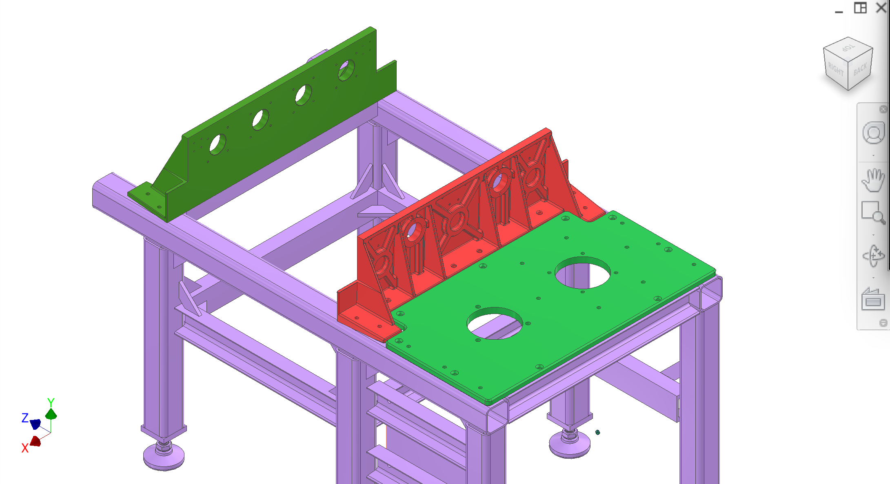
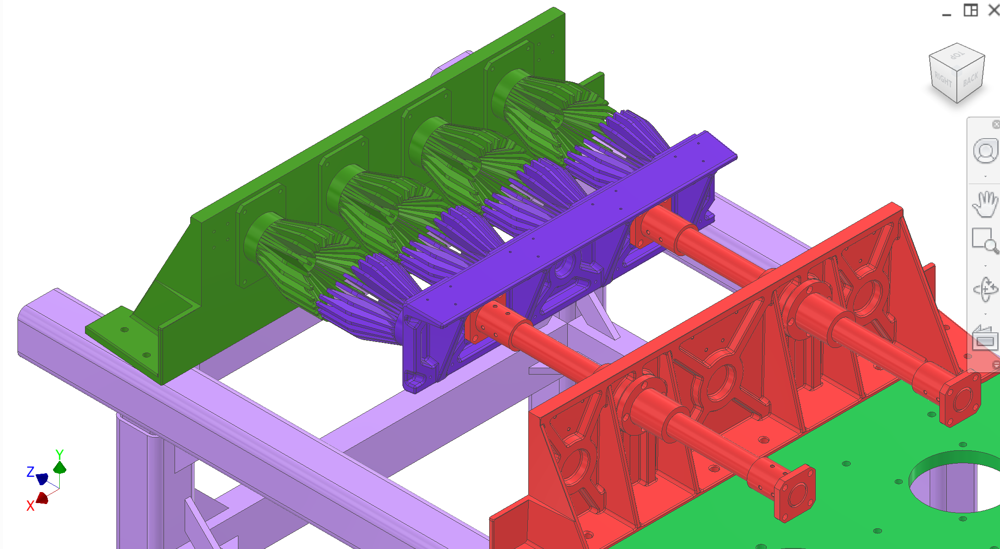
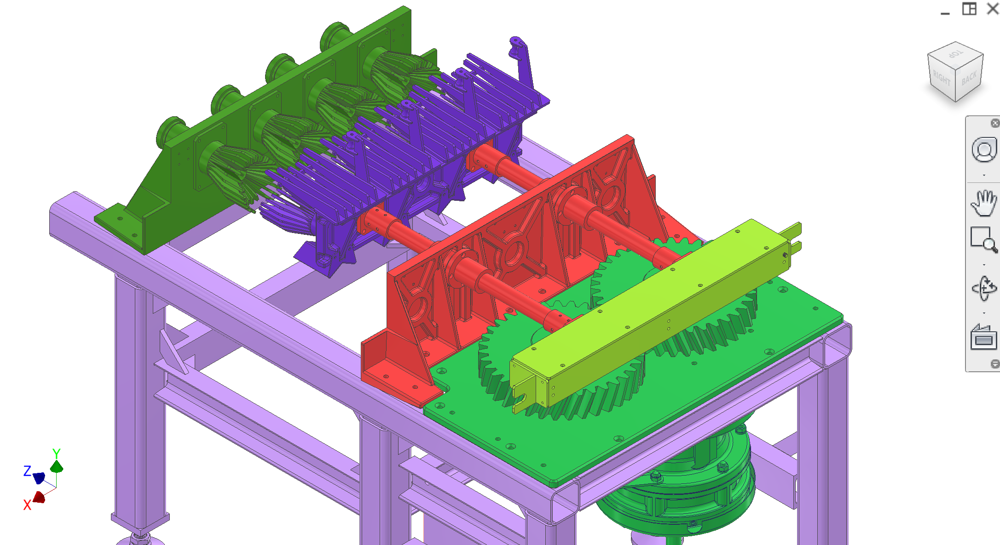
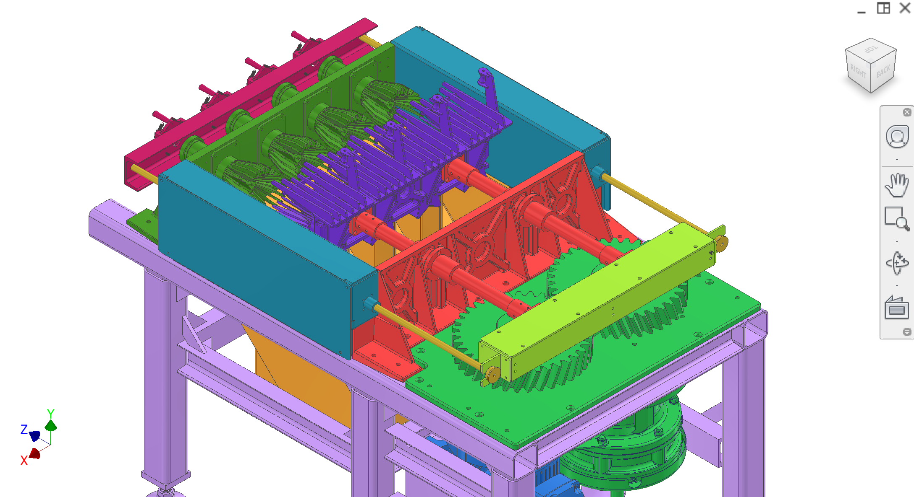
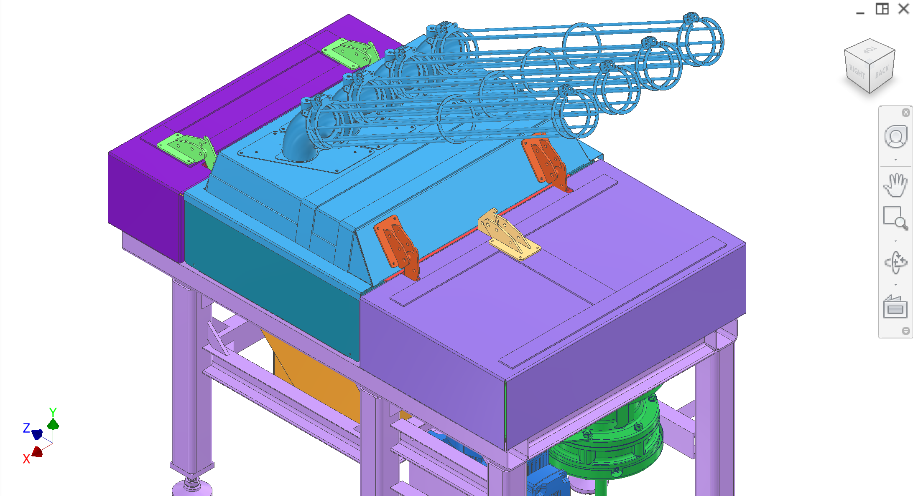
Figura A1 — Quadro de nível; localizar e fixar as três placas de interface principais.
1 / 5
closes do subsistema
Fechar as interfaces entre subsistemas centrais. Figuras C1–C8 (C8 é uma visão alternativa do drivetrain-enclosure).
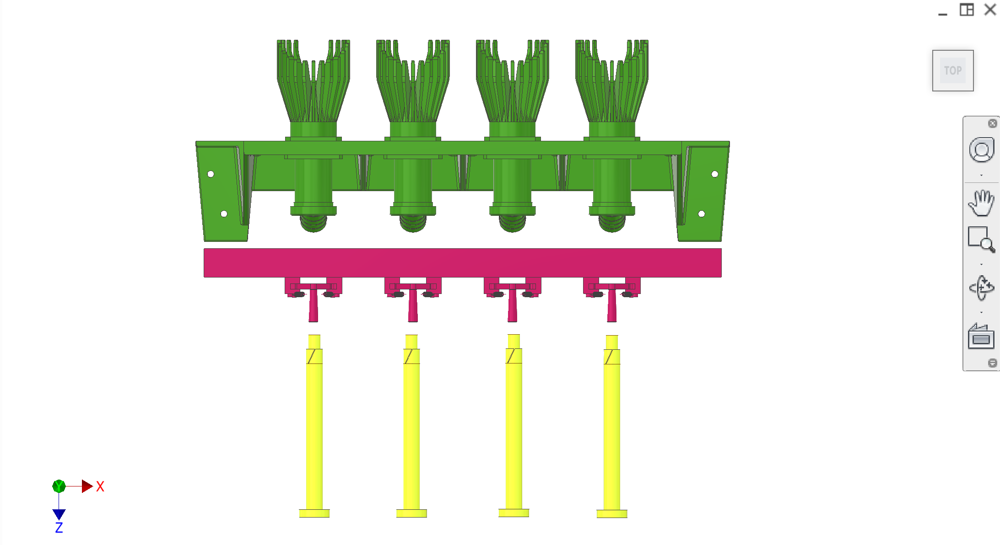
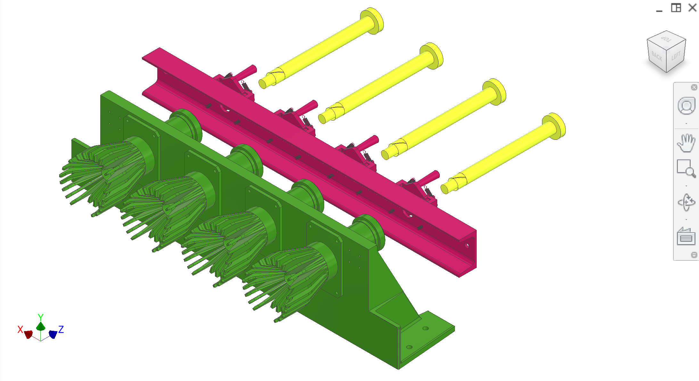
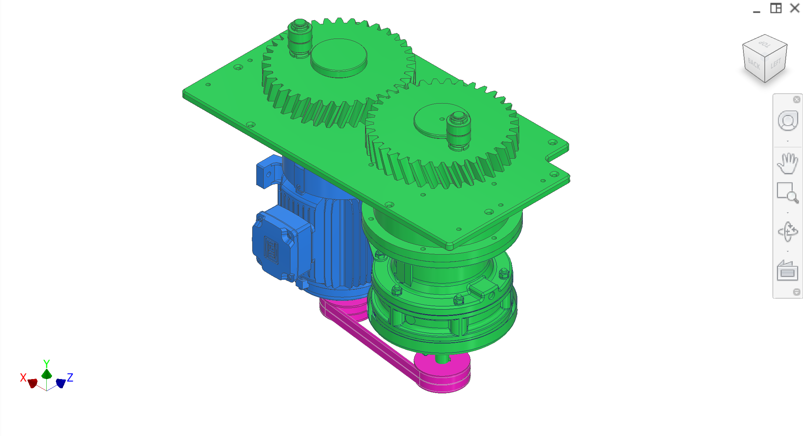
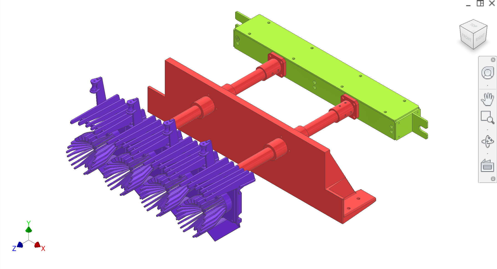
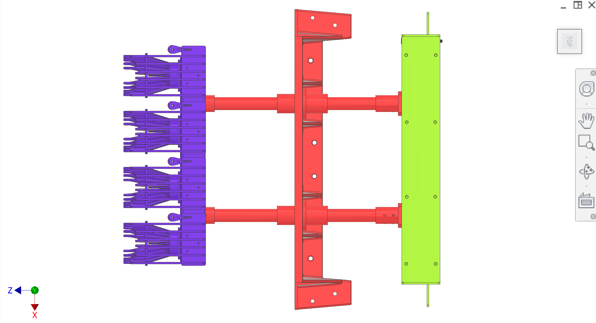
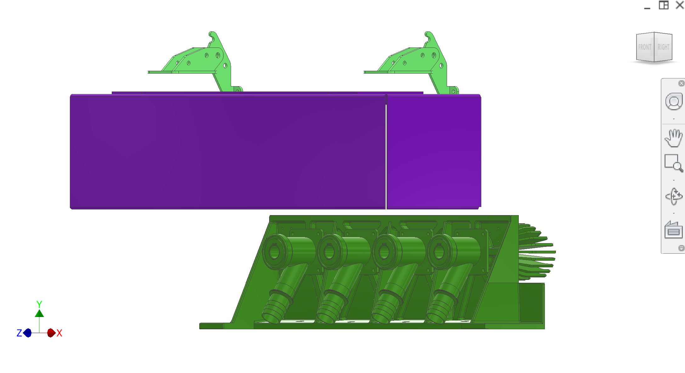
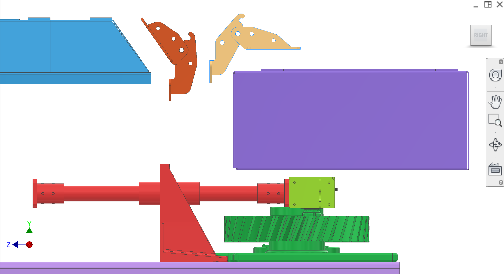
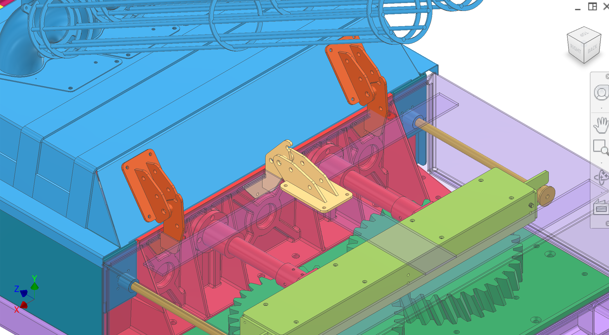
Figura C1. Interface de ejeção / coleção do núcleo.
22 / 8
Discussão
Construção
Quadro principal:Tubos quadrados 80×80×5 GB/T como barras de carga primária;#8 C-bracketsPara os membros secundários/apoiadores;gussetsentre membros, conforme mostrado em CAD; solda totalmente soldada.Nivelamento:McMaster6111K669M24 × 100 mm montagens de nivelamento giratório sobreEndplates M24nas seis pernas.
Montagem e dobradiças:Os trilhos laterais e os feixes cruzados forneceminterfaces com parafusosPara as três placas principais. As placas são abaixadas e alinhadas nesses parafusos primeiro;furos de dobra são criados após o alinhamentoporbroca + frenagem para H7para reconstrução repetível – não contando com “placas de dobra” pré-cortadas nos trilhos como o esquema de localização primária.
Detalhe e interfaces são fornecidos pelo proprietário; tolerância final e montagem são para empreiteiros. VerPerguntas sobre o RFPPara eliminar parâmetros por subsistema e subconjunto.
Desenho e intenção difíceis
Estado— Existe CAD preliminar (altura actual). Não liberado para fabricação; espera-se que os contratantes proponham melhorias de DFM e tolerância/montagem.
O que a moldura deve fazer— Fornecer uma estrutura de datum estável e repetivel para que o acionamento, transmissão, extração e coleta possam ser alinhados e montados sem perda de tempo ou vida útil do rolamento.
Interfaces superiores— Três placas de montagem principais (carregadas/colecção, transmissão, drivetrain) montam do topo para os carris laterais do quadro. O conceito atual inclui dowels (H7) + shims; contratante pode propor uma melhor estratégia de ajuste/localização para gerenciar a distorção de solda.
Problemas e riscos conhecidos
Distorção de solda / planicidade— risco de que as superfícies da interface superior como soldada não sejam flush/flat. Existem pés de nivelamento ajustáveis, mas espera-se que o ajuste da interface placa-trilho e/ou shimming compense a distorção local.
Repetibilidade do alinhamento— O alinhamento repetido após o serviço é crítico. O módulo de extracção (descascadores accionados) deve alinhar-se concentricamente com os descascadores do lado da recolha; o desalinhamento corre o risco de colisão e de desgaste acelerado.
Desembaraço das máquinas (3a partes)— A máquina está planeada para se sentar numa plataforma elevada, de modo que os augers podem ser localizados por baixo e a distância exata do chão não é uma restrição primária. Ainda assim, para plantas-piloto menores, a folga extra abaixo do quadro pode ser benéfica para a instalação/remoção mais rápida e acesso ao serviço; contratante a considerar.
Área de coleta capa / acesso ao usuário— A corrente do êmbolo de abertura ascendente/bloqueio da tampa de recolha do operador de acesso próximo da frente. A abordagem de tampa/ringue/cobertura alternada pode exigir alterações na inclinação do carril e características de montagem perto do lado da coleção.
DFM e fabricação (China)
Solda + plano de instalação— Fornecer sequências recomendadas de balanço e solda para controlar a distorção e alcançar a planicidade/quadrado prático nas interfaces das placas.
Usinagem pós-solda contra interfaces ajustáveis— Recomendar se maquinar almofadas/carris após a soldadura, ou em vez disso usar interfaces de placa ajustável/imprimível para atender aos requisitos de alinhamento.
Selecção de membros— Confirmar disponibilidade local de 80×80×5 GB/T tubo e GB/T #8 C-canal/C-brackets; propor equivalentes se melhor para rigidez, controle de distorção ou simplicidade de fabricação.
Tratamento de superfície— O quadro está exposto a vapores/agentes de limpeza, mas está fora da câmara de extracção principal. Recomendar um acabamento prático resistente à corrosão para este ambiente.
Otimizações procuradas
Montagem repetitiva— um plano robusto "alinhar uma vez, em seguida, dowel/ream" para as placas de montagem e os datums do descascador.
Manutenção— fácil remoção/reinstalação de subsistemas sem re-embarque ou realinhamento, sempre que possível.
Tolerância de distorção— Reduzir a sensibilidade à flacidez da solda através do desenho da interface e dos dados.
Acesso do operador— Melhorar o conceito de cobertura/lide da área de recolha para que os operadores possam estar próximos da frente da máquina.
Perguntas para o contratante
Propor uma sequência de solda + fixação / jig abordagem para controlar a distorção e atingir alvos práticos de planicidade / quadrado nas interfaces da placa.
Recomendar o esquema de datum e estratégia de localização (dois / H7, shims, montagens ajustáveis, almofadas usinadas) para garantir o alinhamento repetível após a remoção do serviço.
Devemos esperar a usinagem pós-solda (e onde), ou podemos evitá-la com interfaces ajustáveis/imprimíveis? Fornecer trocas.
Recomendar as escolhas de membro/travamento (GB/T #8 C-canal ou alternativas) que são comuns na China e melhorar o desempenho de rigidez/distorção.
Propor uma estratégia de desobstrução para terceiros peeling/core augers sob o pára-quedas da casca (definição de envelopes, altura ajustável, membro transversal inferior removível/relocalizado, etc.).
Proponha um conceito de cobertura/montagem de área de coleta que melhore o acesso do operador, mantendo a segurança e a rigidez.
Cadeia de suprimentos e alternativas
Montagens de nivelamento— Especificações actuais: McMaster 6111K669 M24. Contrator para propor equivalentes disponíveis para a China, se aceitável.
Perfis e placas— Preferir perfis GB/ISO comuns e tamanhos de estoque; propor equivalentes quando reduzem o tempo de lead ou complexidade de fabricação.
Entregas esperadas e aceitação
Entregas— Pacote de desenho de soldadura actualizado (chamados de solda), esquema de dados, objectivos de tolerância, controlos de inspecção recomendados e um processo de montagem/alinhamento/doolização para reconstruções repetiveis.
Aceitação— Três placas de montagem podem ser alinhadas e permanecer alinhadas sob cargas de funcionamento; o alinhamento do descascador de extracção à recolha é repetivel após desmontagem/remontagem; as juntas não deslizam/freta sob vibrações/cargas cíclicas.
Princípios de concepção
Estes princípios guiam o design de quadros e quaisquer alterações na configuração atual.
Princípio
Designação das mercadorias
Estabilidade
Resista à deflexão sob cargas de operação para que o alinhamento e o tempo sejam mantidos. A rigidez da estrutura soldada e interfaces de placa é crítica.
Alinhamento
As três interfaces principais (drivetrain, transmissão, placas de montagem carregadas) devem ser localizadas e orientadas de modo que os eixos de transmissão, rolamentos e peelers alinham-se à intenção de projeto. As dobras e furos H7 fornecem alinhamento repetitivo após desmontagem.
Forçar a transmissão
As forças de reacção do comboio e do êmbolo devem ser transportadas através do quadro para o chão sem distorção local. Caminhos de carga limpos; articulações adequadas.
Repetibilidade
Placas e suportes removíveis e remontáveis sem perda de alinhamento. H7 furos e dowels definir o datum; shims para caber-up.
Manutenção
Subconjuntos removíveis e reinstaláveis para manutenção. Sem alinhamento permanente.
Fabricabilidade
Materiais, soldabilidade e sequência de montagem alcançáveis pelo parceiro de fabricação (por exemplo, Sean/YES).
Adicionar figura:Série de fotografias de fluxo de trabalho— shim → broca → ream para placas carregadas vs transmissão vs drivetrain.
Adicionar figura:Nivelamento das pernas— Interface de montagem giratória M24 com a placa do tubo.
Adicionar figura:Dados globais— diagrama único que liga os trilhos à cadeia de alinhamento do descascador.
Componentes
Quadro principal— tubos quadrados 80×80×5 GB/T, #8 C-brackets, totalmente soldadas; seis pernas com placas endplates M24
Montagens de nivelamento— 6111K669 M24 100 mm Montanha de nivelamento giratório (McMaster)
Placa de montagem carregada— montagem da recolha; módulo de recolha e lado estático da extracção
Placa de montagem da transmissão— subsistema «transmissão», dois eixos de 35 mm, dois rolamentos lineares LMK35UU (antiga placa de montagem de rolamentos)
Placa de montagem do comboio— duas engrenagens, rolamentos cónicos, espaçador redutor, redutor Sumitomo
Suporte acionado— montagem do eixo de transmissão/moção (se necessário)
Interfaces e tolerâncias
Interfaces e tolerâncias conhecidas para peças de moldura. As ligações vão para subsistemas relacionados.
Parte
Interface / tolerância
Relacionado
Quadro principal
Tubos quadrados 80×80×5 GB/T; #8 C-brackets; gussets; interfaces de placas aparafusadas em carris/fios de cruzamento; H7 dowels via alinhamento-então-drill/ream após ajuste
—
Montagens de nivelamento
6111K669 M24 100 mm (McMaster); endplates M24 perfurados em seis pernas
—
Placa de montagem carregada
Montagens de cima para cima; H7 furos para dobradiças; abas para montagem